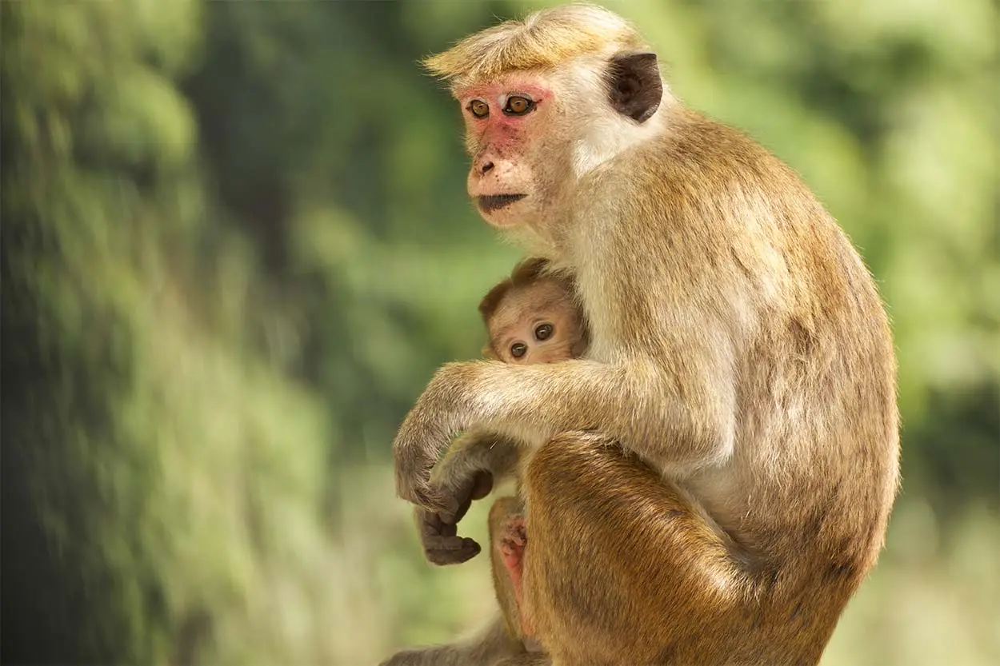
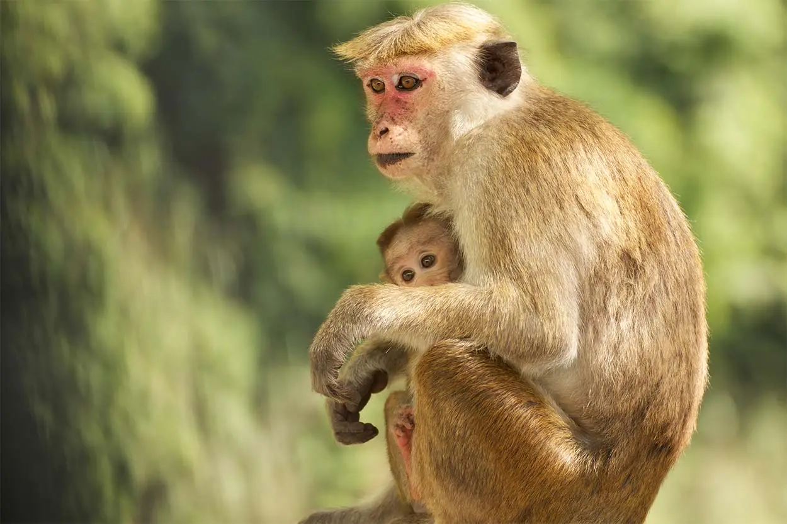
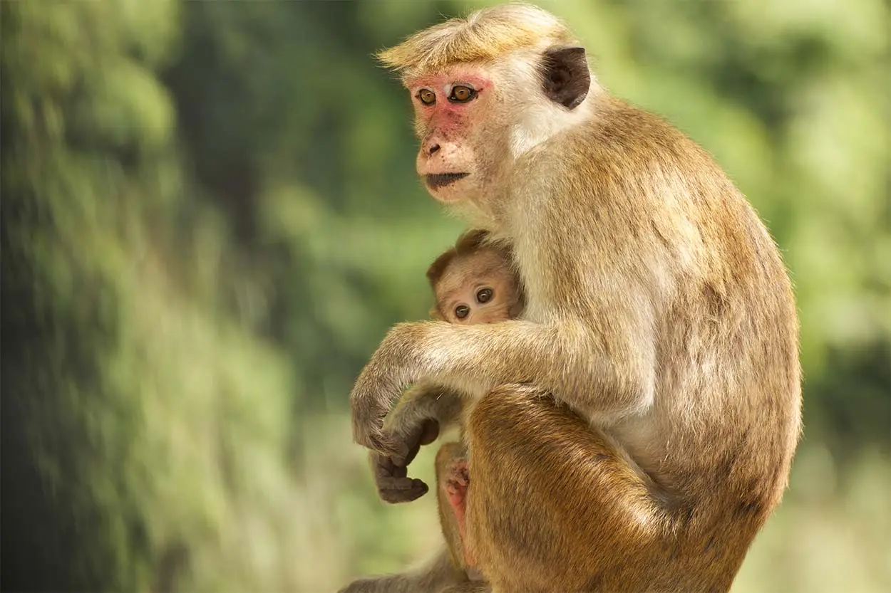

One of Sri Lanka's must-see locations is Yala National Park, also called Ruhuna National Park. This outstanding game reserve, which is the most well-known in Sri Lanka, is situated in the southeast of the country for good reason. Yala is divided into five blocks and occupies an area of 1,260 square kilometers. It is believed to have the highest density of leopards per square kilometer in the world. The most popular area of the reserve is Block I, which also offers the best opportunities for a leopard safari. Although leopards are normally difficult to spot, sightings in Yala are very good; you may see them lounging in the sun on rocky outcrops, in trees, across paths, and next to waterholes. Sloth bears, Asian elephants, deer, monkeys, buffalo, and several bird species coexist with leopards. Yala provides the finest chance to observe leopards in Sri Lanka if that's your top priority.

The greatest place in Sri Lanka to witness a variety of wildlife, including sloth bears, elephants, and leopards, is Yala National Park. The park is home to 44 animal species and about 215 bird species, including seven unique species. The park is split into five blocks, the most popular of which is block I, which is home to the majority of game drives. This block is known for having the highest density of leopards per square kilometer worldwide. Many of the younger males sunbathe on rocky rocks in broad view, and meander languidly along paths, so accustomed are they to their supremacy within the reserve and the jeeps that come looking for them. Yala is therefore the most visited national park in Sri Lanka and draws a sizable number of tourists. Aside from the elusive sloth bears, which are small, scrubby bears that enjoy feasting on the fruits of the palu tree in May and June when they are in season, other prominent animals in the park include elephants, sambur deer, jackals, and langur monkeys. Highlights of the area's fauna include the brown-capped babbler, blue-tailed bee-eater, Sri Lanka wood pigeon, and Sri Lanka grey hornbill, some of which are endemic. Notable inhabitants of the park include the larger adjutant and the uncommon Black-necked Stork, which is frequented by numerous migratory species.
Geographically speaking, Yala National Park is situated in Sri Lanka between latitudes 06°16′ and 06°42′ North and longitudes 81°15′ and 81°42′ East. The town of Tissamaharama in the Southern Province's Hambantota District is the gateway to the Park. Ruhuna National Park experiences a typically hot and dry environment due to its location in one of Sri Lanka's arid regions. The region receives its yearly rainfall in November through January during the northeast monsoon, as well as erratic intermonsoonal showers in March/April and September. Although a daily maximum of 37 C is not unheard of during the dry season, the yearly temperature close to sea level is 27 C.
In Yala National Park, safari rides are a no-brainer. They offer thrilling wildlife encounters and unsettling experiences that are all designed to make you appreciate the local wildlife in its natural setting. In addition to reserving a jeep and driver for your safari, it is advisable to arrange for a guided tour. A guide will show you all the best spots for sightseeing and be available to answer any questions you may have or provide important information about the Park and its inhabitants. You may be sure to see a wide range of wildlife, including wild boars, monitor lizards, buffalo, crested serpent eagles, peacocks, and flocks of spotter dear. Elephants, leopards, and crocodiles are uncommon sights. You will probably see at least one elephant in zone 1, as there are approximately 10-15 of them there. Although there are thought to be 75 leopards in the about 144 square kilometer area, it is uncommon to observe even a lone leopard. If you love nature, spending two to three nights in Yala will maximize your chances of seeing the creatures. Every day at 6 a.m., the park opens to visitors. If you're lucky, you might spot some animals in the early morning when they're just starting to wake up and wander or sit on the walkways!
With good reason, Yala is one of Sri Lanka's 70 "Important Bird Areas." The park is home to about 215 different bird species, seven of which are native to Sri Lanka. These include the black-capped bulbul (Pycnonotus melanicterus), brown-capped babbler (Pellorneum fuscocapillus), crimson-fronted barbet (Psilopogon rubricapillus), blue-tailed bee-eater (Merops philippinus), Sri Lankan wood pigeon (Columba torringtoniae), brown-capped babbler (Pellorneum fuscocapillus), and last but not least, the Sri Lankan grey hornbill (Ocyceros gingalensis).In addition, the rare species of Purple Heron, Lesser Flamingo, Egrets, Oriental Darters, and Purple Swamphen are drawn to the lagoon in the park. Certain waterfowl, such as the Eurasian Curlew, Whitewing Tern, Ruddy, Godwit, Whimbrel, or Northern Pintail, visit Yala Lagoons during the northeast monsoon.
Wildlife aficionados can enjoy a laid-back stay in a natural paradise, explore off-beaten paths at night, or camp beneath the stars at a series of bungalows run by Yala National Park. Not to mention a barbeque meal beside the bonfire.
Learn how to fish the traditional way—on a boat—and enjoy fishing in a tank while mingling with the local fishermen and learning about their everyday activities.